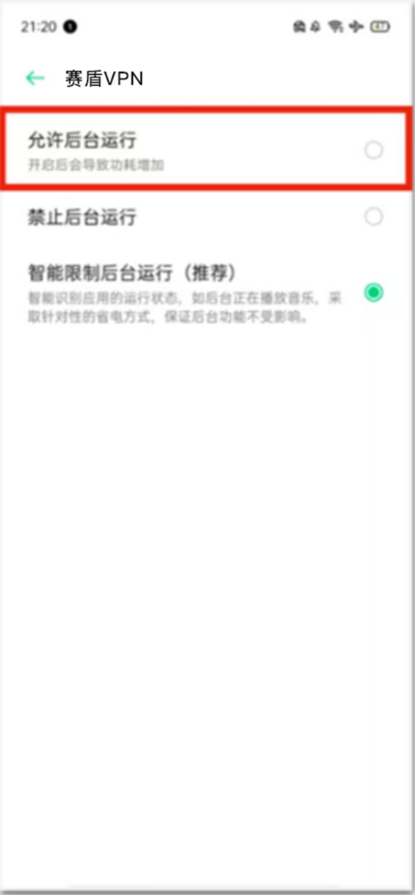
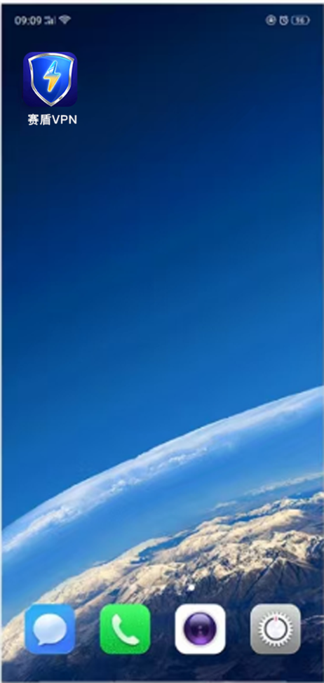

返回
欢迎查看常见问题
智慧服务，让您使用更简单

关闭 OPPO 杀后台让赛盾 VPN 稳定运行
在 OPPO 手机默认设定下，您可能会时不时的需要翻墙访问的网站、App 就不能正常使用了，请这里的介绍进行设置
OPPO 手机存在”杀后台“的现象，这是为了给您的手机节省电量。但是这种操作会导致 赛盾VPN时断时续的工作，会严重影响您的正常使用，
您可以按照下面的说明设置一下您的 OPPO 手机，针对 赛盾VPN 关闭这种电池保护的功能，这样您就能够一直用的爽起来了。并且因为只针对赛盾VPN 进行设定，也不会对您的电量造成损失。
若您是其他厂商的手机，请您参考《每隔几分钟就不好用了，赛盾 VPN 太不稳定了?》文章的说明。
在 OPPO 手机的 ColorOs 的不同版本中操作基本上是一致的:
1.在”最近使用应用“界面当中”锁定“赛盾VPN App，下拉一下就能锁定了;
2.在“应用管理”当中找到“赛盾 VPN”，然后将其“耗电保护”中的选项全部关闭:
3.若无法完成第二步骤，请在“耗电保护”中打开“允许后台运行”，不要选择第三个选项

若您希望了解一些具体的操作，我们下面针对ColorOS 3.0 和 ColorOS 5.0 给出详细的说明,
锁定“赛盾 VPN”APP

上图的操作步骤是:
点击手机左下角的菜单按键
找到“赛盾 VPN”这个 App:
在界面上下拉一下，就会看到左上角有一个锁头标记
这样的设定就可以了。
关闭“后台中占有资源及数据的应用”
上面的操作步骤是：
进入手机“设置”App 当中:
·进入“应用管理”栏目，在 App 的列表中选择“赛盾 VPN” App 进行详细设定
·进入“赛盾 VPN”详细设定中的“耗电保护”栏目将其中的所有选择全部关闭掉
在 ColorOS 3.0 的系统中，您可能看到的不是这些项目，应该会是”后台冻结“和”检测到异常时自动优化“这两个项目。请您一样关闭这些项目即可。
关闭“耗电保护”的选项
1.清理残留卸载数据
文件管理 → 手机储存 → 找到卸载的应用文件 → 长按后选择删除
2.关闭自启动应用:
设置→ 应用(不需使用的 App)一 自启动管理
3.终止后台不常用应用的运行
设置 → 系统设置 开发者选项 →正在运行的服务 → 选择需要关闭的应用 → 停止
开发者选项开启方式:设置一关于本机版本信息 →版本号(连续点击五下)
注:若您在下载和使用过程中有任何问题，您随时可以发送邮件给 {{kfEmail}}，将由专业的客户服务人员帮助您获取到最新版本的软件。